Snacks y dulces
Islas enteras de dulce americano y botana. Chocolate, gomitas, papas y las palomitas Brim's de mantequilla de cine, que se acaban solas.
- Hershey's
- Reese's
- Haribo
- Takis
- Cheetos
- Doritos
- Snyder's
- Werther's
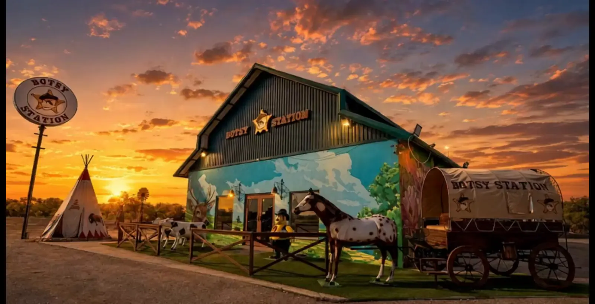
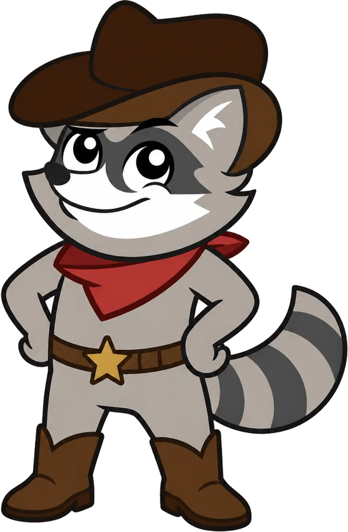
Libramiento Manuel González · Altamira, TamaulipasRefresco americano bien frío, botana que no hay en otro lado y un tigre de tamaño real a media tienda. Botsy Station no es una parada de cinco minutos: es el motivo para desviarte.
Botsy Station abrió sobre el Libramiento Manuel González con una idea simple: traer a Altamira el producto que antes solo se conseguía cruzando la frontera. Lo que no tiene nada de simple es el edificio.
Afuera hay un granero verde con mural pintado, un tipi, una carreta de época y un caballo a tamaño real. Adentro, techos de vigas, candelabros hechos con ruedas de carreta y un tigre parado a media tienda. Entras por un refresco y sales media hora después, con fotos.
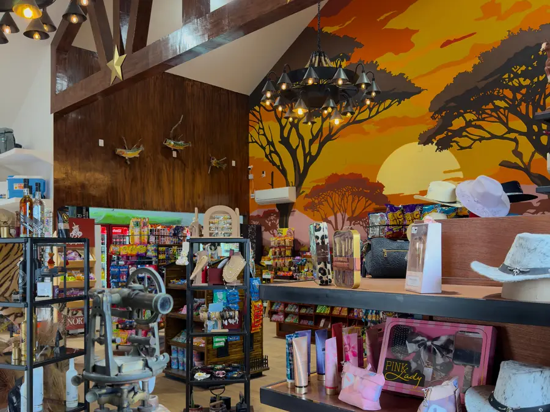
Producto americano de verdad, no la versión de siempre de la tienda de carretera. Esto es lo que hay adentro.
Islas enteras de dulce americano y botana. Chocolate, gomitas, papas y las palomitas Brim's de mantequilla de cine, que se acaban solas.

La nevera que la gente viene a ver. Dos puertas llenas de refresco importado y energizantes, fríos desde las seis de la mañana.
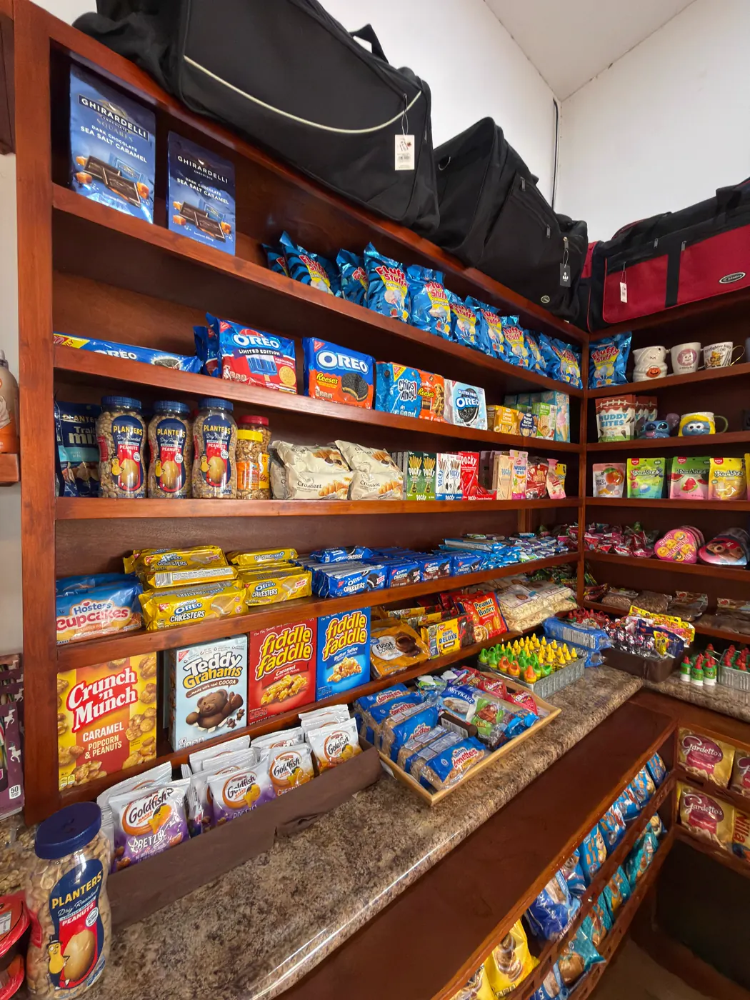
Lo que no está en el súper de aquí: galletas y cereales americanos, despensa, salsas y enlatados. La sección donde la gente se queda leyendo etiquetas.
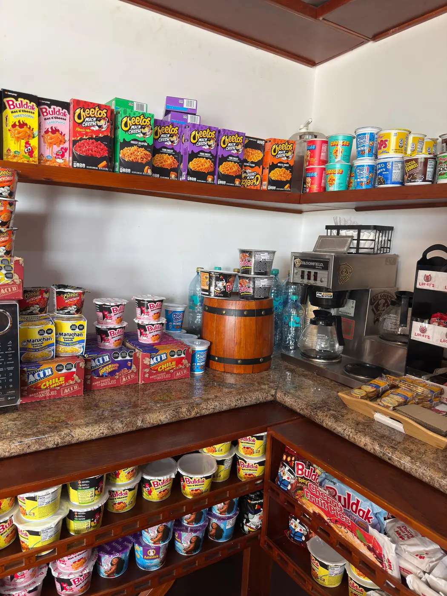
Café recién hecho y sopa instantánea lista para el camino. Hay microondas a disposición del cliente: la calientas aquí y sigues.

Sombreros vaqueros, cinturones, bolsas de piel y de cuero de vaca, joyería, perfumes, peluches y souvenirs de Botsy para llevarte.
Se te acabó la pila a mitad del libramiento y no traes cable. Aquí hay cargadores, cables, audífonos y accesorios para el celular, más herramientas y artículos prácticos para no quedarte tirado.

Botsy Station no se parece a la tienda de carretera de siempre. Techos altos con vigas de madera, candelabros hechos con ruedas de carreta, estrellas doradas y un mural de atardecer que cubre la pared del fondo.
En el centro del salón hay un tigre a tamaño real. Se ha vuelto la foto obligada de todo el que entra, y la razón por la que mucha gente vuelve con la familia.

Fotos reales de la tienda, sin montaje. Así está hoy.
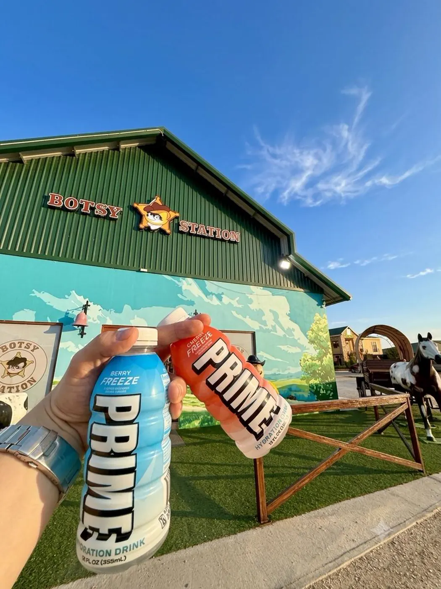
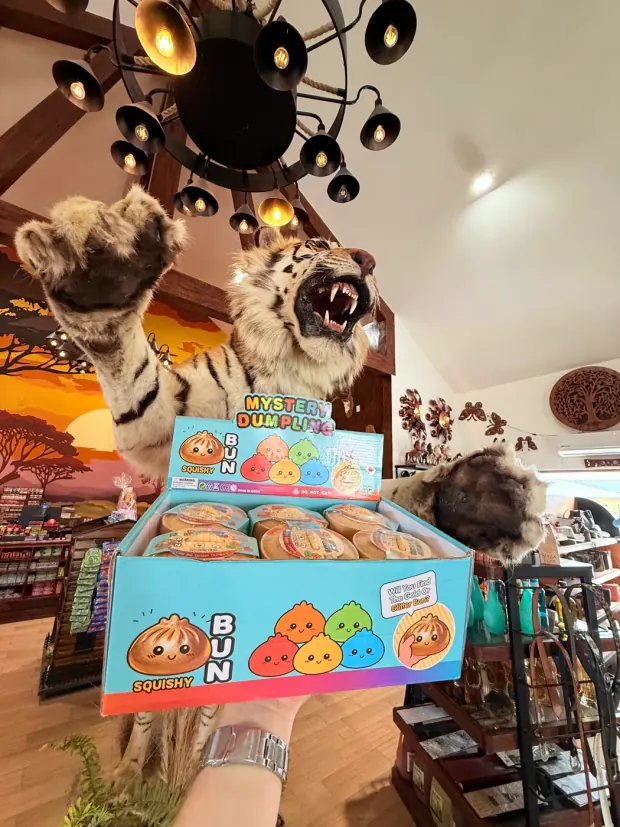

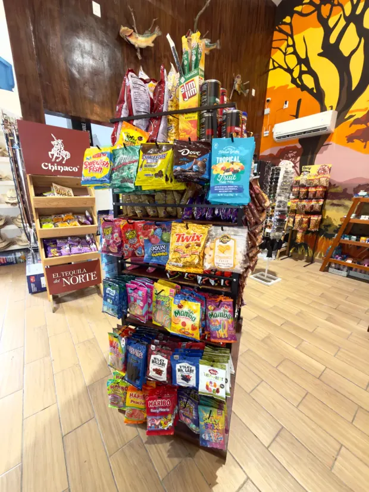

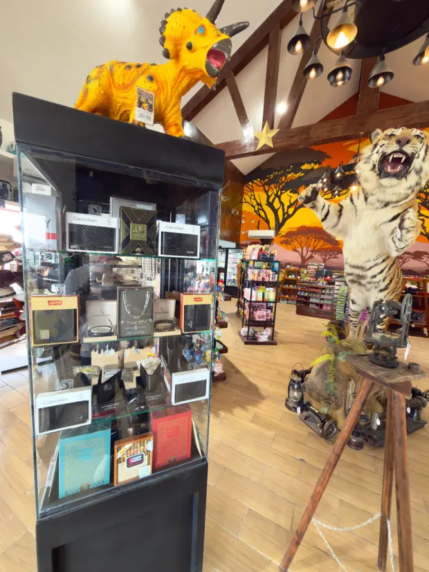
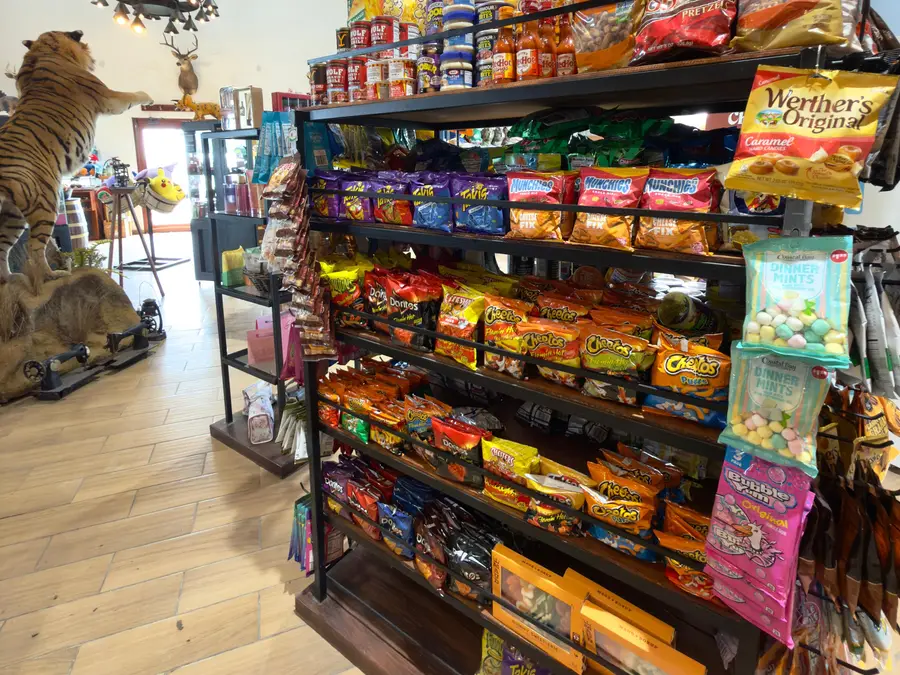
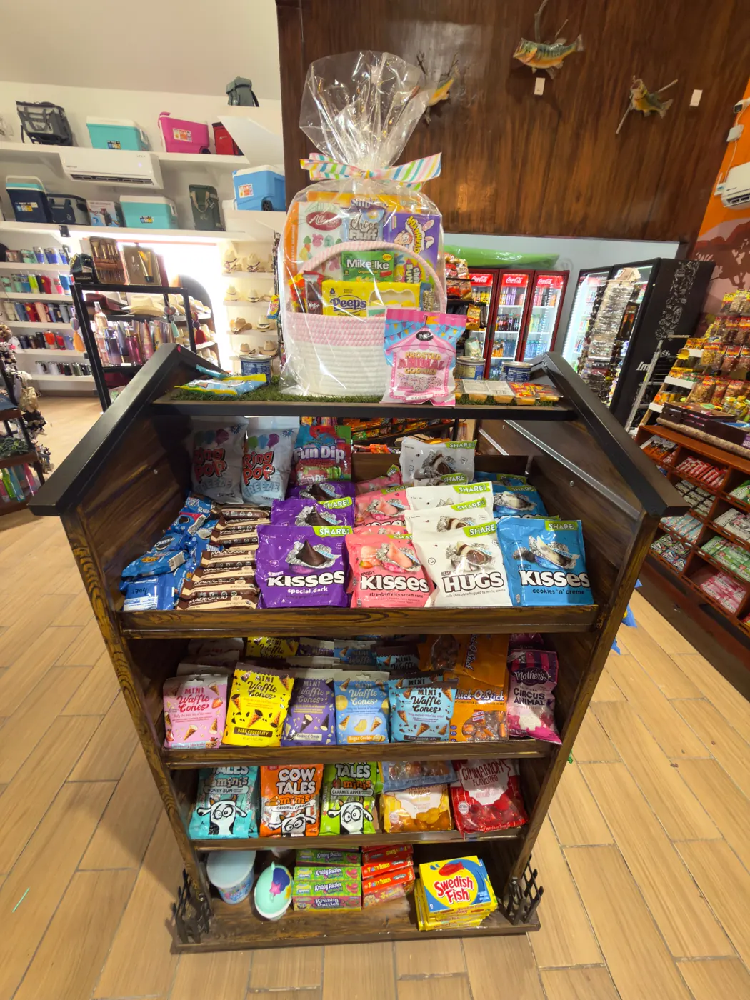
Parada obligada.
No te lo puedes perder!!
Es un bonito lugar y venden cosas americanas, están sobre la carretera.

Así se ve desde la vía a plena luz. Busca el poste con la estrella de sheriff y la carreta blanca.
Carretera Libramiento Manuel González
Altamira, Tamaulipas · C.P. 89613
Entrada directa desde la vía, ambos sentidos.